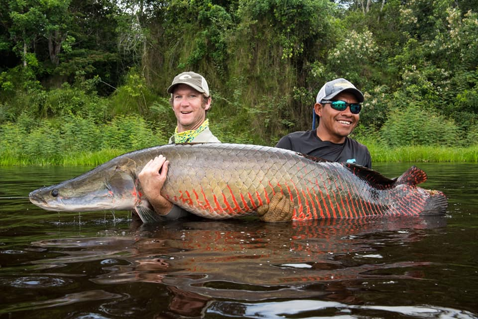

The Iwokrama Forest is nearly 3,710 square kilometres of central Guyana located in the heart of the Guyana Shield,
one of the four last pristine tropical forests in the world.It represents an important transition zone in rainfall, landforms, human histories
and biological communities.The Iwokrama Forest's ecosystem is located at the juncture of Amazonian and Guyanan flora and fauna. As a result,
it contains high species richness and several species of animals that are threatened or extinct across most of their former geographic ranges,
like the giant anteater. It has extraordinarily high bird diversity.
Situated 90 minutes south of the River Lodge, the four-deck Canopy Walkway gives you yet another perspective on the birds and mammals of the forest.
At 30 metres up in the tree-tops you will be eye to eye with many of the tree dwellers that are rarely seen from the ground.
Early risers making their way to the walkway at sunrise are treated to a dawn chorus crescendo (and hot coffee), while sunset
is a leisurely opportunity for sundowners and a steady stream of colorful creatures settling down for the evening.
Our lodge is nestled in one of the world’s most prolific ecosystems, teeming with birds, mammals, amphibians, insects, aquatic life,
trees, plants, and flowers. And, for more than a decade Iwokrama has served as a center of learning for Guyana’s most talented and observant
naturalist guides who curate this remarkable collection of natures wonders. As the centre for guide training in Guyana and a full-fledged
research centre, there isn’t a place on earth where naturalists and nature are in closer proximity to one another!

Iwokrama features many of Guyana’s 800+ species, with a relatively high densities of larger frugivorous birds such as cracids,
cotingas and parrots as compared to other forested areas in the Guyana Shield or Amazonia. A nearby harpy eagle nest is frequently active,
and a Guyana cock-of-the-rock lek on the edge of the Iwokrama reserve provides nearly-guaranteed sighting of this key target species.
Whether you’re a bird photographer, an avid tick-list bird watcher, or a novice just fascinated with rich avian life, our guides
will make sure you have the experience of a lifetime.

The arapaima is South America’s largest freshwater fish! They can grow up to 15 feet and can weigh about 440 pounds but most are about half that
size. The usual length of an arapaima can reach up to 6 feet 7 inches. As a result of overfishing, larger arapaimas are seldom found in the wild.
The arapaima is torpedo-shaped with large blackish-green scales and red markings. It is streamlined and sleek, with its dorsal and anal fin set
near its tail. Their scales have a mineralized, hard, outer layer with a corrugated surface under which lie several layers of collagen fibres in
a Bouligand-type arrangement.
Considering the size and density of the rain forest its no wonder that rivers are the highways and byways of Guyana’s remote interior region.
No visit to Iwokrama is complete without experiencing dawn chorus from the waters of the Essequibo River or trolling slowly along the overgrown
riverbanks at sunset to observe the rainforest’s nocturnal awakenings. We’re a short boat ride from the gushing Kurupukari Falls where village
children dip and dive with wild abandon surrounded by ancient Amerindian petroglyphs.
❮
❯